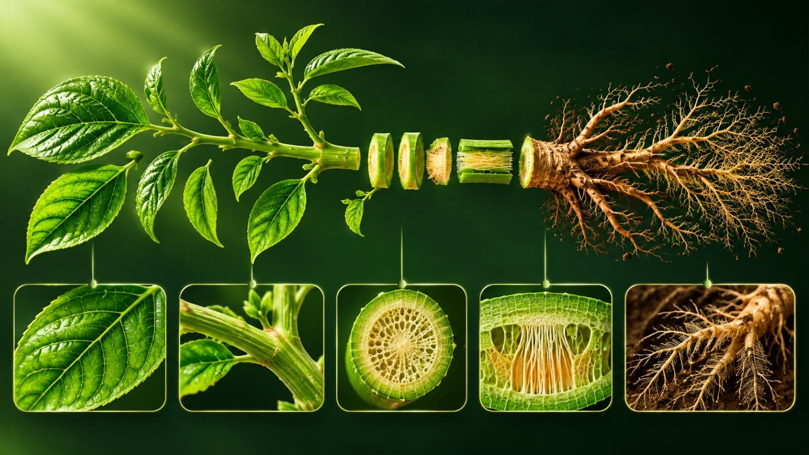
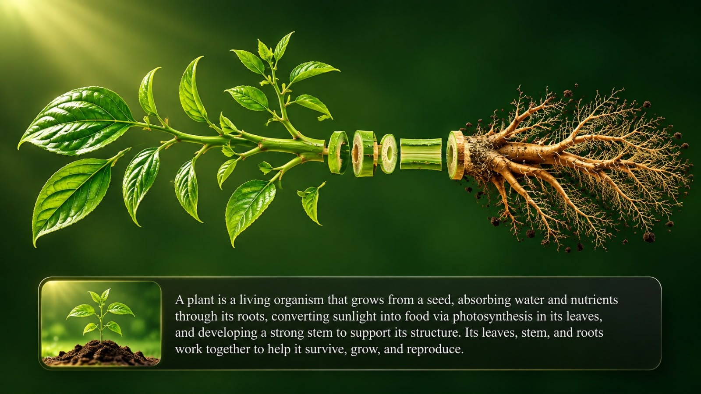

Proactive Foliar Protection
Before Symptoms Appear.
AgriShield transforms crop health from reactive post-infection chemical flooding into proactive early foliar protection — orchestrating time-series microclimate forecasting, edge deep learning vision, and deterministic soil chemistry with certified Human-in-the-Loop oversight.
Vegetative Emergence Stage
Continuous edge microclimate & foliar health stream
Interactive Plant Anatomy & AI Scanning Chamber
Rotate, dissect, and inspect the plant anatomy in 3D space. Explore how AgriShield integrates foliar computer vision, vascular fluidics, and rhizosphere soil chemistry.
AgriShield WebGL 3D Anatomy Chamber
Interactive Digital Twin • Click any organ to focus & inspectPlant Organ Anatomy
Active SensorClick any organ or floating card in the 3D scene to display real-time botanical parameters and AI diagnostic classification.
Leaf Micro-Surface
Stomata & cuticle monitored for fungal spore attachment.
Shoot & Branch Junction
Structural junction for foliar transpiration & fluidic load.
Stem Honeycomb Slice
Parenchyma honeycomb matrix & cambium cellular health.
Vascular Bundles
Xylem & phloem conduits driving sap flow & mineral transit.
Rhizosphere & Roots
Fine root hairs absorbing calibrated NPK & soil moisture.
Engineered for Proactive Field Immunity
Rooted in the official project proposal, AgriShield operates on three synchronized pillars to replace late reactive treatment with early mathematical precision.
1. Predictive Microclimate Analytics
Continuous real-time ingestion of microclimate indicators (Air Temperature, Relative Humidity, and Leaf Wetness Duration) to model pathogen spore incubation curves days before any visible lesions develop.
- Leaf Wetness Duration (LWD) integration
- Fungal/bacterial outbreak risk forecasting
- Proactive preventative spraying window
2. Edge Vision & Foliar Pathology
Custom deep convolutional networks (PyTorch / TensorFlow) deployed on edge mobile devices, delivering instant offline foliar disease classification with calibrated confidence scores.
- Instant lesion detection from mobile camera
- Multi-class foliar pathogen taxonomy
- Calibrated confidence thresholds & bounding boxes
3. Deterministic Soil & Chemical Titration
Strict mathematical engine computing micro-dosed NPK fertilization ratios and pesticide volume based on field dimensions, crop growth stage, and dynamic soil pH/fertility laboratory metrics.
- Precision NPK element calculation
- Zero chemical leaf burn or overspray
- Groundwater ecological runoff prevention
Reactive Management (Legacy Paradigm)
Farmers inspect crops manually only after severe chlorosis and wilting appear. Chemical pesticides are dumped indiscriminately, burning foliage, contaminating groundwater, and driving high financial losses.
AgriShield Proactive Decision-Support (New Paradigm)
Predicts pathogen incubation prior to visible symptoms. Prescribes calibrated micro-doses verified by certified agronomists, reducing chemical waste by 35% while maximizing crop yield.
5-Tier Distributed Technical Pipeline
Bridging field sensors, edge neural networks, deterministic agronomy algorithms, and certified agronomist web gateways into a unified decision ecosystem.
Experience AgriShield Engines in Action
Test each core subsystem directly in your browser: AI foliar scanner, microclimate disease predictor, NPK fertilizer calculator, and human-in-the-loop review station.
Early Blight (Alternaria solani)
Copper Hydroxide 77% WP (2.5 g/L) + Mancozeb (2 g/L)
Deterministic Prescription
| Fertilizer / Carrier | Calibrated Quantity |
|---|---|
| Urea (46% Nitrogen) | 1,467 kg |
| DAP (18-46-0 Phosphorus) | 635 kg |
| Potassium Sulfate (50% K2O) | 1,080 kg |
| Target Spray Water Carrier | 2,000 L |
Solanum tuberosum (Potato - Russet)
Difenoconazole (250 EC) @ 250 mL/ha
Scientific Impact & Deliverables
Demonstrating real-world feasibility, technological innovation, and ecological protection for graduation capstone standards.
Multimodal Data Fusion
Synchronous synthesis of unstructured visual imagery with continuous microclimate time-series and laboratory soil chemistry in a unified decision platform.
Human-in-the-Loop Safety Gate
Eliminating catastrophic autonomous AI failure modes by gating high-toxicity or low-confidence treatments through certified agronomist portals before spraying.
Ecological & Financial ROI
Reduces smallholder farmer operational expenditures by cutting redundant chemical purchases by ~35% and preserving beneficial soil microbiome.
| Deliverable (مخرجات المشروع) | Technical Specification | Primary Stakeholder | Status |
|---|---|---|---|
| Mobile Field Application | Flutter, offline-first SQLite, camera ingestion, microclimate advisory | Field Farmers & Scouts | Completed |
| Certified Agronomist Web Portal | Vue/React Dashboard, HITL approval queue, audit telemetry | Certified Agronomists | Completed |
| Deterministic Dosage Engine | Mathematical NPK titration, soil pH calibration, spray volume logic | Agronomy Labs | Validated |
| Empirical Academic Research | Comprehensive evaluation of Edge CNN accuracy & time-series latency | Graduation Board | Documented |
Download Full Academic Proposal PDF
Access the complete project specification submitted for the Graduation Project: "AgriShield (AgroVision) - A Proactive Decision-Support System for Precision Agriculture & Foliar Protection".
High-Resolution Botanical Diagnostics
All empirical assets provided for the AgriShield graduation project, exhibiting plant cellular morphology from leaf cuticle to underground rhizosphere.

